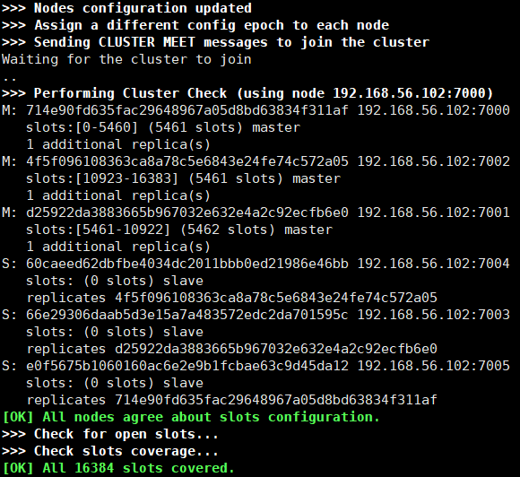

原文连接:https://www.cnblogs.com/caison/p/11717636.html
上篇文章《支撑微博亿级社交平台，小白也能玩转Redis集群(原理篇)》介绍了Redis集群相关原理，这篇文章将介绍Redis Cluster集群的搭建、配置，运维、扩容等具体操作
集群搭建
2018年10月 Redis 发布了稳定版本的 5.0 版本，推出了各种新特性，其中一点是集群管理工具从基于Ruby的redis-trib.rb移植到基于C语言redis-cli中，方便集群的构建和管理
Redis Cluster集群运行至少需要包含3个主节点，实现高可用最少需要3主3从6个节点
以下步骤基于Redis 5.0.5版本，介绍如何在一台 Linux 服务器上搭建有3主3从的6节点的 Redis集群
- 步骤1 创建安装目录
mkdir -p /data/project/redis-cluster- 步骤2 下载源码并解压编译
cd /data/project/redis-cluster
wget http://download.redis.io/releases/redis-5.0.5.tar.gz
tar xzf redis-5.0.5.tar.gz
cd redis-5.0.5
make执行make后，如果报错“jemalloc/jemalloc.h：没有那个文件或目录”，可以改为用以下命令：
make MALLOC=libc- 步骤3 创建6个Redis配置文件
6个配置文件不能在同一个目录，下面Redis 6个节点分别安装在7000~7005端口
首先创建配置文件目录及文件，定义如下：
mkdir -p /data/project/redis-cluster/nodes/7000
mkdir -p /data/project/redis-cluster/nodes/7001
mkdir -p /data/project/redis-cluster/nodes/7002
mkdir -p /data/project/redis-cluster/nodes/7003
mkdir -p /data/project/redis-cluster/nodes/7004
mkdir -p /data/project/redis-cluster/nodes/7005
touch /data/project/redis-cluster/nodes/7000/redis.conf
touch /data/project/redis-cluster/nodes/7001/redis.conf
touch /data/project/redis-cluster/nodes/7002/redis.conf
touch /data/project/redis-cluster/nodes/7003/redis.conf
touch /data/project/redis-cluster/nodes/7004/redis.conf
touch /data/project/redis-cluster/nodes/7005/redis.confredis.conf配置文件的内容为：
############################## 网络 ##############################
# 端口
port 7000
# 非保护模式，如果值为yes，则必须是 bind配置指定的ip的机器连接或者使用密码连接
protected-mode no
############################## 通用 ##############################
# 后台运行
daemonize yes
# 记录redis进程pid
pidfile /var/run/redis_7000.pid
############################## 集群 ##############################
# 启用集群模式
cluster-enabled yes
cluster-config-file nodes_7000.conf
# 集群节点如果在该超时时间(毫秒)内不可达，则认为节点处于故障状态
cluster-node-timeout 15000
############################## 持久化 ##############################
# AOF, RDB持久化文件目录
dir /data/project/redis-cluster/nodes
# 开启AOF持久化
appendonly yes
# AOF文件名
appendfilename "appendonly_7000.aof"
# 当目前aof文件大小超过上一次重写的aof文件大小的百分之多少进行重写
auto-aof-rewrite-percentage 100
# 设置允许重写的最小aof文件大小，避免了达到约定百分比但尺寸仍然很小的情况还要重写
auto-aof-rewrite-min-size 64mb
# RDB文件名
dbfilename dump_7000.rdb其中 port 、 pidfile、cluster-config-file、appendfilename、 dbfilename配置需要随着节点的不同而调整
配置项说明可以参考redis-5.0.5/redis.conf，每一项都介绍得很详细，推荐阅读
- 步骤4 启动节点
/data/project/redis-cluster/redis-5.0.5/src/redis-server /data/project/redis-cluster/nodes/7000/redis.conf
/data/project/redis-cluster/redis-5.0.5/src/redis-server /data/project/redis-cluster/nodes/7001/redis.conf
/data/project/redis-cluster/redis-5.0.5/src/redis-server /data/project/redis-cluster/nodes/7002/redis.conf
/data/project/redis-cluster/redis-5.0.5/src/redis-server /data/project/redis-cluster/nodes/7003/redis.conf
/data/project/redis-cluster/redis-5.0.5/src/redis-server /data/project/redis-cluster/nodes/7004/redis.conf
/data/project/redis-cluster/redis-5.0.5/src/redis-server /data/project/redis-cluster/nodes/7005/redis.confps -ef|grep redis，可以看到6个redis进程已启动：
- 步骤5 启动集群
使用如下命令启动集群，IP地址自行替换：
/data/project/redis-cluster/redis-5.0.5/src/redis-cli --cluster create 192.168.56.102:7000 192.168.56.102:7001 192.168.56.102:7002 192.168.56.102:7003 192.168.56.102:7004 192.168.56.102:7005 --cluster-replicas 1启动成功信息如下：

到此，Redis Cluster 集群搭建完成
集群信息查看
Redis5的redis-cli新增系列集群运维功能，查看命令详情：
/data/project/redis-cluster/redis-5.0.5/src/redis-cli --cluster help命令参数具体作用可以参考官方文档，下面会基于其中一些常用命令对集群进行管理
- 检查节点状态
/data/project/redis-cluster/redis-5.0.5/src/redis-cli --cluster check 192.168.56.102:7000- 查看集群信息
/data/project/redis-cluster/redis-5.0.5/src/redis-cli --cluster info 192.168.56.102:7000集群扩容
集群现在有3主3从，下面新增4个节点扩容变成5主5从
- 步骤1 启动新节点
创建4个Redis配置文件，端口号为7006~7009，然后启动节点(参考“集群搭建”的步骤3和步骤4) - 步骤2 新节点加入集群
设置4个节点分别加入已有redis集群，2个为主节点，2个为从节点
/data/project/redis-cluster/redis-5.0.5/src/redis-cli --cluster add-node 192.168.56.102:7006 192.168.56.102:7005
/data/project/redis-cluster/redis-5.0.5/src/redis-cli --cluster add-node 192.168.56.102:7007 192.168.56.102:7005
# 24e2c是节点7006的id，代表该节点加入集群并为7006的从节点
/data/project/redis-cluster/redis-5.0.5/src/redis-cli --cluster add-node 192.168.56.102:7008 192.168.56.102:7005 --cluster-slave --cluster-master-id 24e2c369678952b07d95c0a4b49c2d7a7b2e2bf7
# 24e2c是节点7007的id，代表该节点加入集群并为7007的从节点
/data/project/redis-cluster/redis-5.0.5/src/redis-cli --cluster add-node 192.168.56.102:7009 192.168.56.102:7005 --cluster-slave --cluster-master-id ab0f74a19819a74238df7a510494e9418678cbe1此时集群状态如下，其中主节点7006和主节点7007还没分配任何slot，在下面的步骤会进行分配：
- 步骤3 模拟slot重新平衡分配
基于rebalance命令，增加--cluster-simulat参数，查看会迁移哪些slots，而不会真正执行迁移操作
/data/project/redis-cluster/redis-5.0.5/src/redis-cli --cluster rebalance 192.168.56.102:7000 --cluster-threshold 1 --cluster-use-empty-masters --cluster-simulat返回以下迁移信息：
- 步骤4 执行slot重新平衡分配
执行rebalance命令，平衡集群节点slot数量，重新分配slot( 去掉--cluster-simulat)
/data/project/redis-cluster/redis-5.0.5/src/redis-cli --cluster rebalance 192.168.56.102:7000 --cluster-threshold 1 --cluster-use-empty-masters至此，集群扩容完成，集群缩容的话，需要基于reshard将需被下线的结点中的slot移到其他结点，然后基于del-node命令删除结点
总结
这篇文章介绍Redis Cluster集群一些基本实现，篇幅所限，后面有机会再展开介绍Redis一些线上问题踩坑经验、监控运维平台建设，欢迎继续关注
参考
redis cluster管理工具redis-trib-rb详解
http://weizijun.cn/2016/01/08/redis%20cluster管理工具redis-trib-rb详解/
9.png)